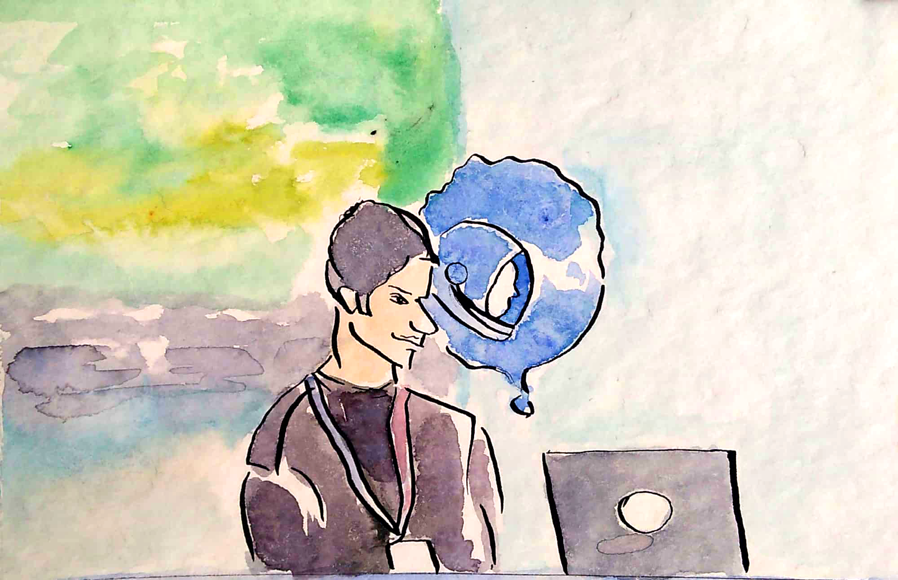
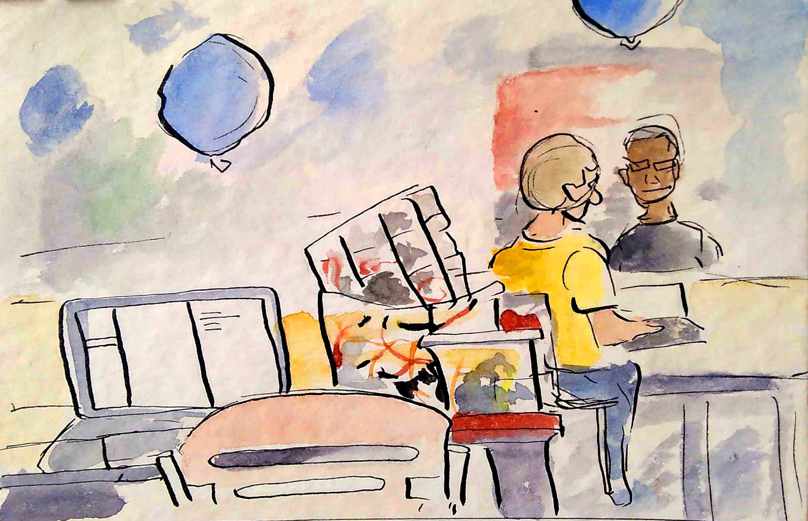
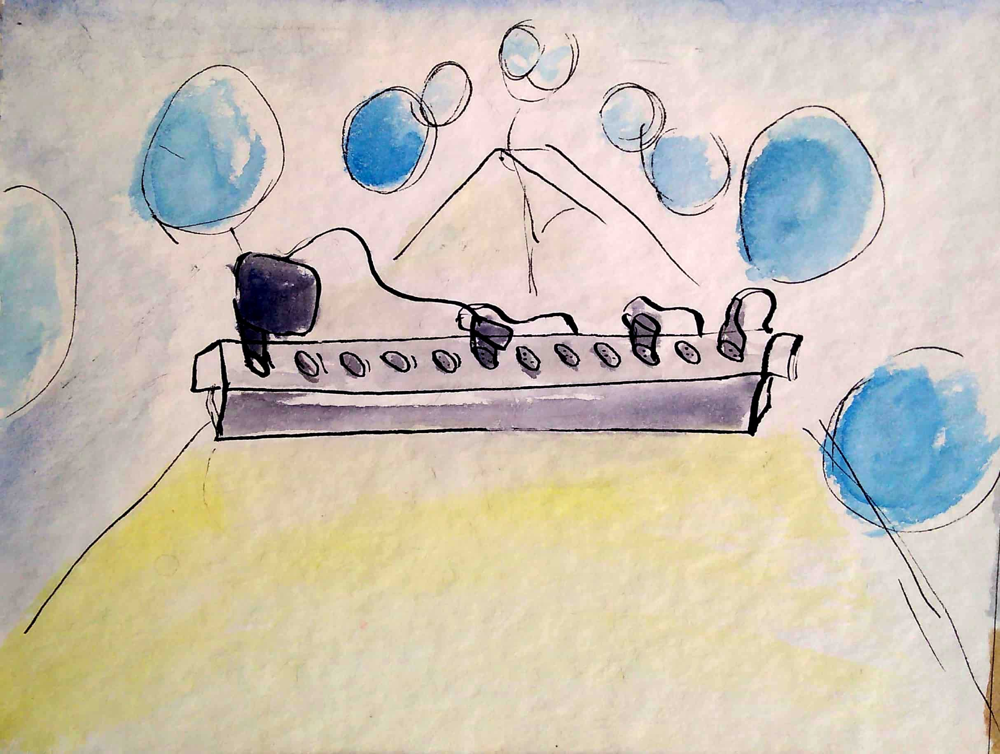
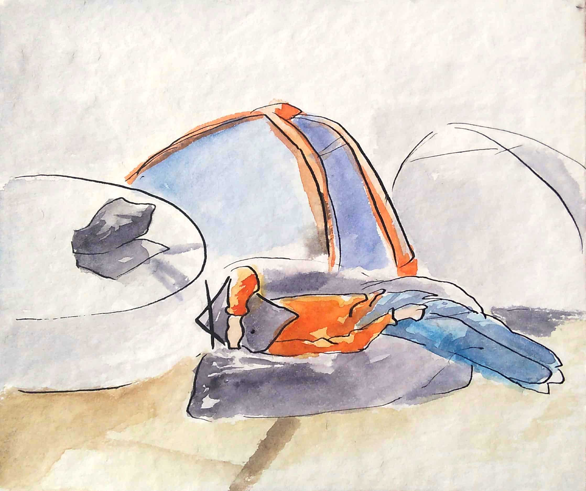

O Bluehack é uma maratona de programação, e está em sua Terceira edição em São Paulo. Com astronautas que viajam para outros mundos em busca de soluções inovadores, são mais de 30 horas de uma maratona feita de designers, programadores, desenvolvedores de negócios e muita comida.
Ligados em diversas problemáticas e oportunidades de negócios, entre balões e conversas, o Bluehack pode ser confundido com uma festa.
O entusiasmo toma conta dos participantes ao serem desfiados pelos seguintes desfios: Ciência para cidade - foco em bem estar social, Deep learning para cidades inteligentes, Agricultura digital, Experiência do consumidor com data insights - Fiat Chrysler, DevOps automatização - Santander e Traga ser próprio desafio.
Os participantes transformam a IBM em casa. Dormem um sono ansioso, se preenchem de energético e comida mas se mantém firme diante do grande momento das apresentações que surgem no fim do ultimo dia de maratona. No menu abaixo é possível visualizar um pouco do que foi feito em cada projeto de cada grupo que esteve aqui.
